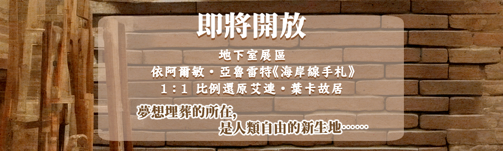

海岸線手札：還原艾連‧葉卡故居
本展 1:1 比例還原艾連‧葉卡故居，對於艾爾文‧史密斯而言夢想埋葬的所在，卻是人類自由的新生地。
緣起
「帕拉迪島的海岸線總長度約為4,828公里，那意味著要搭上將近一星期的火車，才能夠繞行帕島一周。
把世界交到了我手中的長官與吾友，大概沒有想過這奢侈的自由，首先被我浪費在量測我們的家鄉……」
──摘自阿爾敏‧亞魯雷特《海岸線手札》
──摘自阿爾敏‧亞魯雷特《海岸線手札》
展區重點
- 艾連‧葉卡故居：依據手札內容，還原地下室格局，包含書桌機關，以及被士官長踢破的門板展示
- 來自馬雷的照片：模擬還原來自陌生陸地的照片，為調查兵團第一次得知海另一邊的世界
- 同袍語錄：收錄於手札中，有關調查兵團104期(新里維班)在戰時苦中作樂的語錄，顯示士兵們的強大意志
參觀資訊
免費入場；週一休館。導覽預約請來信 info@erwin-foundation.com。